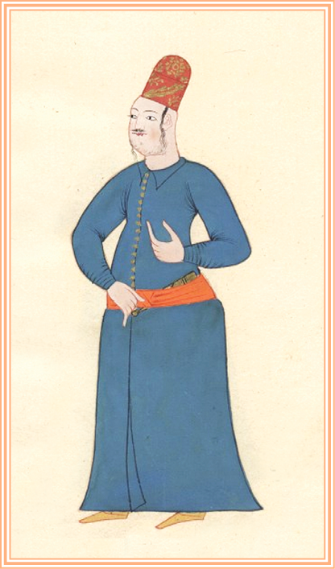

ALBÜM
Topkapı Sarayı görevlilerinin temsili resimleri. Aşçılar köftecisi
Aşçılar köftecisi
Silahdar ve Çukadar
Bostancıbaşı
Bostancılar Kethüdası
Dilsiz
Doğancıbaşı
Dülbent Oğlanı
Ekmekçi
Eski Saray Ağası

Zülüflü Baltacılar Kethüdası
Halife
Harici Fırın Ekmekçibaşısı
Has odabaşı

Haseki ağa
Padişah ve maiyeti
Helvacıbaşı
Hünkar aşçıbaşısı
Hünkar kayığında sağ hamleci
İç hazinedarbaşı

Kapı Ağası
Kapıcıbaşı
Kethüda
Kethüda
Kiler ağası

Kiler kethudası
Kilercibaşı
Kızlar ağası
Mum şakirdi
İbrik oğlanı
Peşkir oğlanı
Sarayağası Hadım